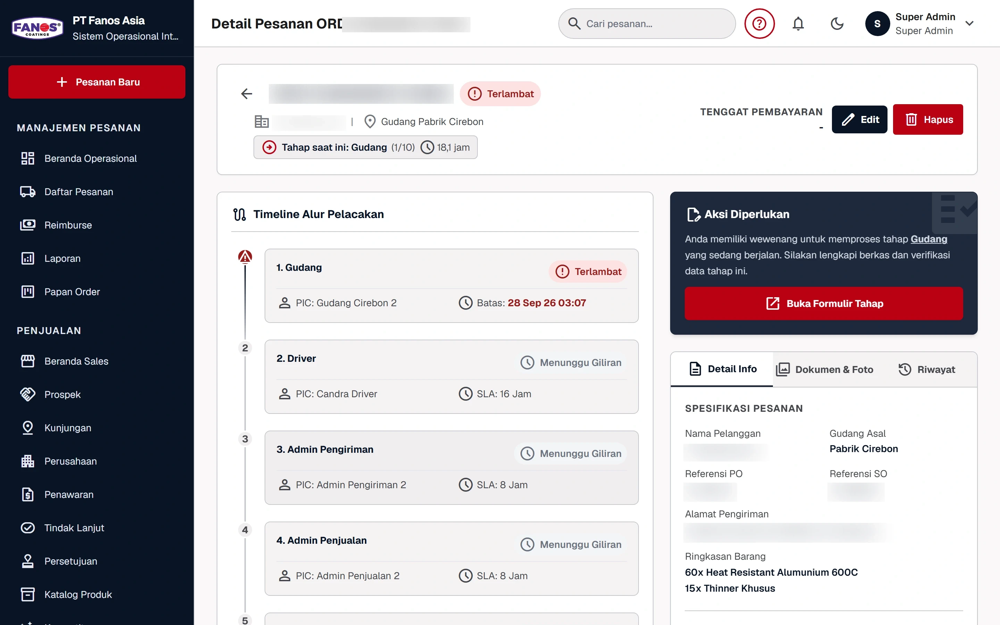
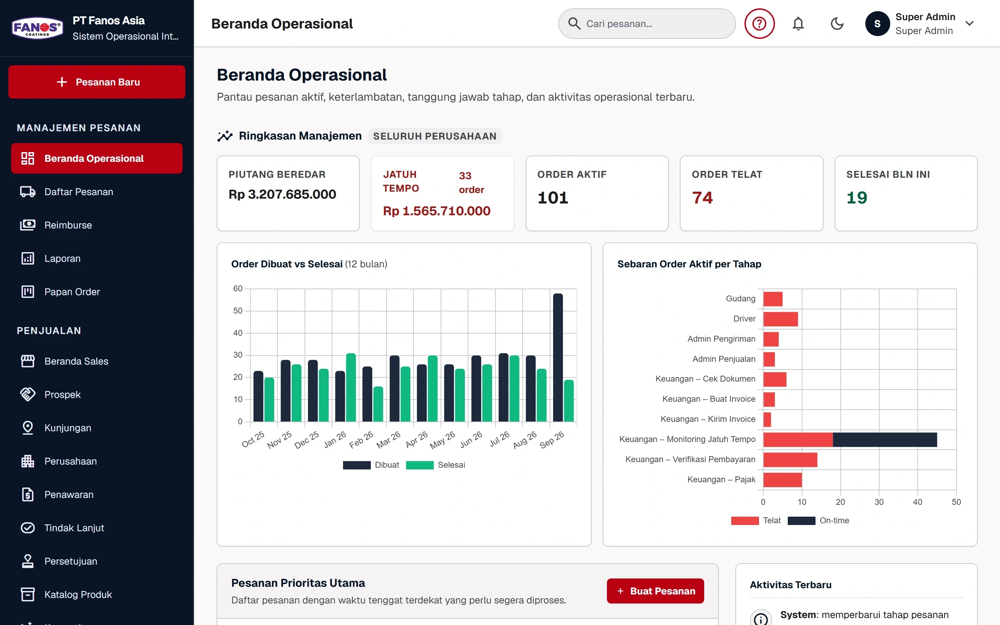
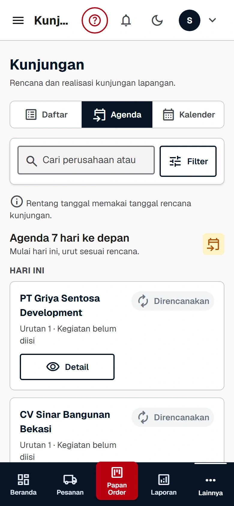
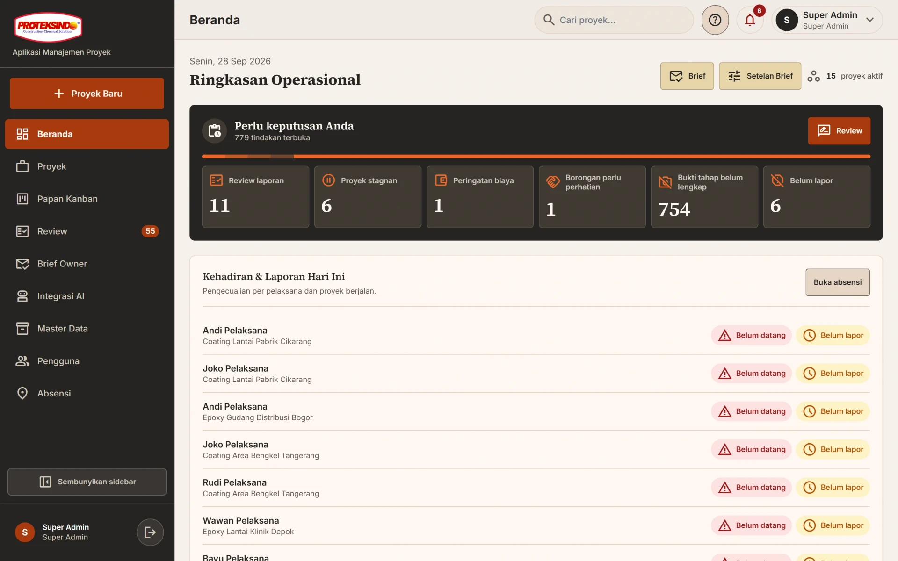
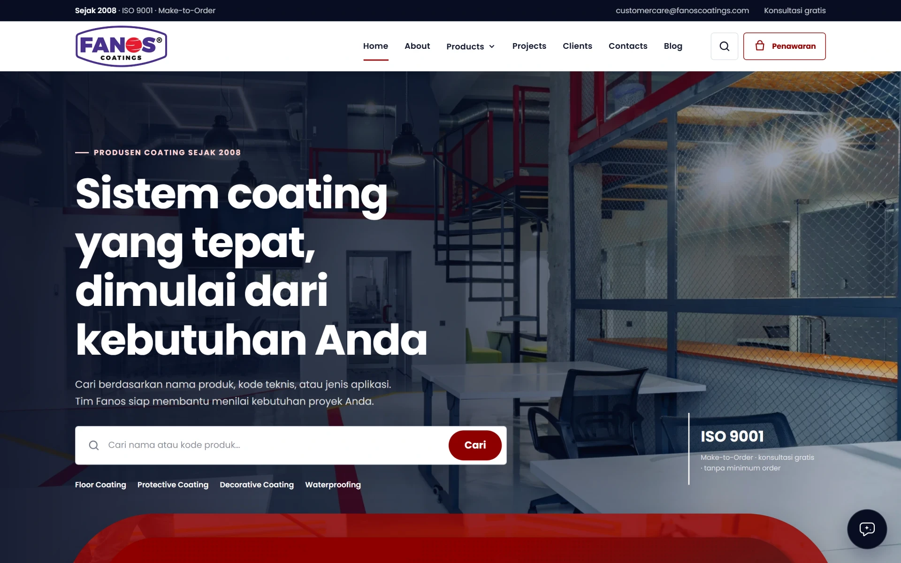
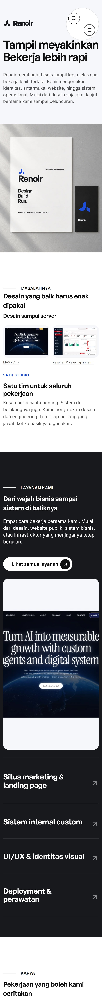

01
Websites
Situs marketing & landing page
PO-0292 sudah sampai mana?
Piutang jatuh tempo berapa?
Agenda sales hari ini apa?
Kok angkanya beda lagi?
Data di spreadsheet. Pertanyaan di chat.
Sistem internal yang menjawabnya.
PO-0292 sudah sampai mana?



PIC, tenggat, dan status terlambat terlihat semua tim.
Tenggat dan piutang tetap terlihat di dashboard.
Sales lapangan punya ruang kerjanya sendiri.
Mulai dari desain saja, atau lanjut sampai peluncuran.
Situs marketing & landing page

Sistem internal custom

UI/UX & identitas visual
Deployment & perawatan
Layanan, karya, dan proses kami ada di website.

Ceritakan yang ingin Anda perbaiki. Kami bertanya seperlunya, lalu menyusun pekerjaannya.